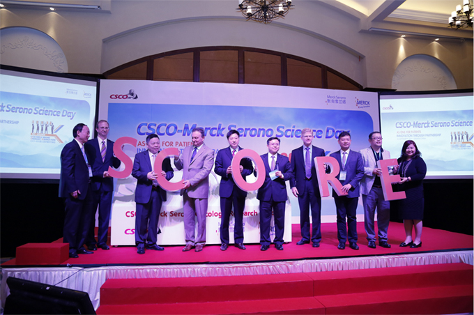

CSCO-默克雪兰诺肿瘤研究基金（SCORE）
第一轮资助项目评审结果公告
015年1月25日，在北京召开了2014年度CSCO-默克雪兰诺肿瘤研究基金（SCORE基金）专家评审会。本轮共收到符合要求的肿瘤研究申请共计93份。CSCO基金会主席秦叔逵教授和秘书长李进教授主持，聘请了唐平章、于丁、梁军、梁后杰、沈琳、徐建明、张力、胡国清、胡超苏、吴穷、陈功和张小田等教授组成评审委员会。

经过申请书匿名评估、热烈讨论和无记名投票，评审委员会共遴选出20份研究项目申请书，现予公告。SCORE基金将先期资助以下每个研究项目5万元人民币作为启动资金，待年底提交研究中期报告后，评审委员会将再根据研究进展情况、阶段性结果以及预期可完成性等多方面进行评估，对具有潜力的优良项目继续给予滚动基金的支持。
CSCO基金会同意，SCORE基金第二轮资助项目申请现在启动，请大家注意查阅有关通告和申请要求。
CSCO基金会SCORE基金第一轮资助项目
头颈肿瘤方向
| 编号 | 申请人 | 单位 | 课题名称 |
|---|---|---|---|
| Y-MT2014-001 | 袁响林 | 华中科技大学附属同济医院 | 西妥昔单抗联合奥沙利铂对不同组织类型食管癌的放疗增敏作用及机制研究 |
| Y-MT2014-004 | 涂文勇 | 上海交通大学附属第九人民医院 | EGFR抑制剂对NK细胞介导的口腔鳞癌细胞杀伤作用影响 |
| Y-MT2014-005 | 张健 | 南方医科大学珠江医院 | GnT-V通过诱导EGFR的糖基化参与调节C225放疗增敏作用 |
| Y-MT2014-010 | 郑登云 | 广东省人民医院 | 一项评估紫杉类药物联合铂类cetuximab诱导化疗对于局部晚期喉/下咽癌喉功能保留的2期临床研究 |
| Y-MT2014-015 | 于雁 | 哈尔滨医科大学附属肿瘤医院 | IL-2联合西妥昔单抗治疗晚期头颈部鳞癌的机制研究 |
| Y-MT2014-020 | 彭纲 | 华中科技大学同济医学院附属协和医院 | EGFR与miRNA交互作用调节鼻咽癌放射敏感性的机制研究 |
| Y-MT2014-023 | 陈静 | 华中科技大学同济医学院附属协和医院 | EGFR参与食管癌放射损伤修复通路的研究 |
消化道肿瘤方向
| 编号 | 申请人 | 单位 | 课题名称 |
|---|---|---|---|
| Y-MX2014-002 | 裴海平 | 中南大学湘雅医院 | K-RAS野生型左右半结肠癌在抗EGFR时不同疗效的分子机制探讨 |
| Y-MX2014-009 | 张卫 | 上海长海医院 | 新RAS基因型联合体系在西妥昔疗效预测中的价值和应用研究 |
| Y-MX2014-011 | 彭星辰 | 四川大学华西医院 | 细胞间信息传递的新途径微囊泡在西妥昔单抗耐药中的作用及分子机制研究 |
| Y-MX2014-020 | 李贵新 | 潍坊医学院附属医院 | 结直肠癌患者循环肿瘤细胞K-RAS基因检测指导西妥昔单抗临床应用的研究 |
| Y-MX2014-034 | 陈治宇 | 复旦大学附属肿瘤医院 | 血浆中游离DNA定量，RAS及BRAF基因突变状态变化预测抗EGFR单抗疗效和预后的探索性研究 |
| Y-MX2014-040 | 南克俊 | 西安交通大学第一附属医院 | ELEF-1在结直肠癌转移中调控EFGR表达的机制研究 |
| Y-MX2014-048 | 石敏 | 南方医学大学南方医院 | EGFR通过调节谷氨酰代谢支持胃癌细胞存活及生长 |
| Y-MX2014-049 | 李恩孝 | 西安交通大学第一附属医院 | 抗EGFR单克隆抗体及IGF-1R抑制剂对合并糖尿病的胰腺癌治疗作用研究 |
| Y-MX2014-052 | 王岩 | 解放军第三0七医院 | 循环肿瘤DNA用于抗EGFR单抗治疗晚期结直肠癌的疗效预测及耐药机制分析研究 |
| Y-MX2014-057 | 朱陵君 | 江苏省人民医院 | 1ncRNA-LUNAR1在晚期大肠癌西妥昔单抗耐药中的机制研究 |
| Y-MX2014-063 | 王秀问 | 山东大学齐鲁医院 | Wnt/B-catenin信号通路在结肠癌Cetuxinab耐药中的作用及机制研究 |
| Y-MX2014-066 | 蔡国响 | 复旦大学附属肿瘤医院 | 西妥昔单抗应用于结直肠癌腹膜转移的腹腔治疗的体外研究 |
| Y-MX2014-067 | 郭慧君 | 解放军第八一医院 | 清热解毒凉血法治疗西妥昔单抗相关皮肤毒性的基础和临床研究 |